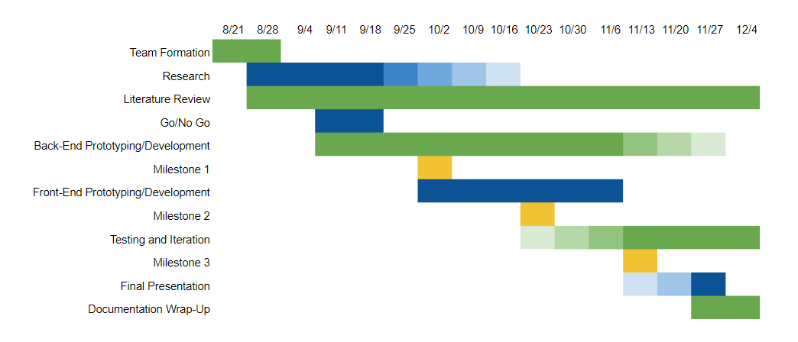

Project Background
Problem Statement
Spectators are disappointed that they are unable to capture and share their fleeting moment of fame as they appear on the jumbotron.
Research Question
How can we best capture and retrieve spectator appearances from live video feeds?
Goal
To develop a prototype of the Jumbo Capture application’s core functionality.
Meet The Team
Development Team

Zach Barnett

Tyler Brangman

James Tarr

Alex Wilson
Sponsor
Kristy Verticchio
Kempt LLC
Advisor
Carlos Morales
Associate Professor, Purdue Polytechnic Institute Distance Learning Director
Project Plan
Research
Research is focused primarily on the development of our end product, including topics such as:
Jumbotron systems
Video and Image Processing
Back-end (server-side) technologies
Front-end (client-side) technologies
Development
Development of our end product will result in a prototype which addresses the problem defined above.
Success will be measured based upon the end product's ability to provide a foundational prototype of the application's core functionality.
Timeline
{kind=link}
Milestone 1
PySceneDetect - clipping scenes from local drive
Development environments set up
Milestone 2
Database setup for accessing video files
Store video files and do basic queries
Milestone 3
Back end technologies: splitting live video, uploading to database
Start to front end interface
End of Semester
Finalized front end interface & back end technologies
Final testing/debugging for prototype
Product Details
Our project as it stands today is a representation of the core functionalities that the Jumbo Capture application will ultimately consist of.
The process starts with a live feed. In our prototype, this live feed is generated from a test video file via the BlackMagic Hyperdeck Studio provided by the VisualFX lab. The Hyperdeck Studio reads a specifically formatted file from a solid state drive, and then outputs this as if the saved file were live footage, via an HD/SDI or HDMI cable.
From there, the BlackMagic Web Presenter takes in the footage and converts it to a signal that can be sent to the control room hardware application as a USB webcam (in our case, our personal laptops or other development computers serve as the control room hardware).
The feed is then processed by PySceneDetect, which we have modified directly to be able to read in live video rather than a pre-existing video file. PySceneDetect analyzes the video and finds where one camera shot cuts to a different camera shot based on a certain threshold difference between one frame and the next. During this process, PySceneDetect will take a snapshot of the first and last frames of the detected clip.
There are a couple of directions in which we can take the splitting of video content from the live video source and are as follows: we split these videos along the detected scene changes live (requiring further optimization of the code we are working with) or we split these videos after the video feed has ended (utilizing the current PySceneDetect logic but sacrificing access to the videos during the event).
We have modified PySceneDetect to upload the split video clips and images to our file server rather than saving them locally in the same folder as the original video file. On the file server, these files are made available to the front end application so that they can be displayed for the user.
Our front end user interface exists as a method by which to test and ensure that the rest of our application is functional, and it additionally serves as a starting point for future development into the front end.